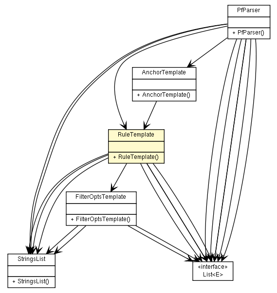

fr.univrennes1.cri.jtacl.equipments.openbsd
Class RuleTemplate

java.lang.Object
 fr.univrennes1.cri.jtacl.equipments.openbsd.RuleTemplate
fr.univrennes1.cri.jtacl.equipments.openbsd.RuleTemplate
public class RuleTemplate
- extends java.lang.Object
Template to build PF rule. This class is used at parsing time
as an intermediate storage.
- Author:
- Patrick Lamaiziere
- See Also:
PfRule
| Methods inherited from class java.lang.Object |
clone, equals, finalize, getClass, hashCode, notify, notifyAll, toString, wait, wait, wait |
RuleTemplate
public RuleTemplate()
getAction
public java.lang.String getAction()
setAction
public void setAction(java.lang.String action)
getDir
public java.lang.String getDir()
setDir
public void setDir(java.lang.String dir)
isQuick
public boolean isQuick()
setQuick
public void setQuick(boolean quick)
getIfList
public StringsList getIfList()
getAf
public java.lang.String getAf()
setAf
public void setAf(java.lang.String af)
getProtoList
public StringsList getProtoList()
getOsList
public StringsList getOsList()
getSourceHostList
public java.util.List<Xhost> getSourceHostList()
getSourcePortList
public java.util.List<PortItemTemplate> getSourcePortList()
getDestHostList
public java.util.List<Xhost> getDestHostList()
getDestPortList
public java.util.List<PortItemTemplate> getDestPortList()
isAll
public boolean isAll()
setAll
public void setAll(boolean all)
getFilterOpts
public FilterOptsTemplate getFilterOpts()
Copyright © 2010. All Rights Reserved.